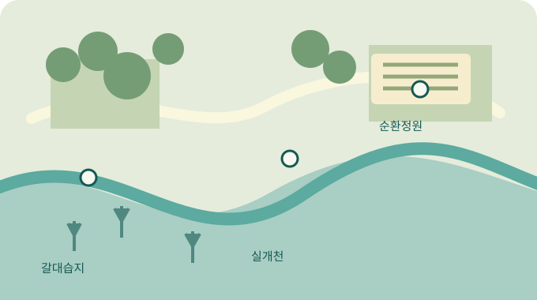

GAON / OCTOBER FIELD NOTES한 번의 관찰이,
오늘의 생태 구역 탐색 ↗한 번의 관찰이,
내일의 환경을 바꿉니다.
물길과 풀숲에서 배우고, 일상에서 다시 순환하는 자원.
시민의 작은 발견을 함께 기록합니다.
EXPLORE OUR FIELD
구역별 자료 ↗세 구역, 하나의 생태길

갈대습지실개천순환정원
WATER TEMPERATURE18.4°C
실개천 · 합성 관측값
FIELD WEATHER맑음 / 가을
관측 전 현장 환경을 기록해요
CIRCULATION NOTE비우고 · 헹구고
분리배출의 첫걸음을 함께 배워요
CITIZEN OBSERVATIONS
모든 기록 ↗시민이 남긴 관측 기록
| 관측 구역 | 기록 제목 | 작성자 | 관측일 | 상태 |
|---|---|---|---|---|
| 갈대습지 | 갈대 사이에서 발견한 잠자리 유충현장 관측 | 서지안 | 2026.10.14 | 기록 완료 |
| 실개천 | 실개천의 물빛을 비교해 보았습니다현장 관측 | 생태해설팀 | 2026.10.13 | 기록 완료 |
| 순환정원 | 빈 우유팩이 화분이 되기까지현장 관측 | 조은솔 | 2026.10.12 | 기록 완료 |
| 갈대습지 | 토요일 아침 철새를 기다린 기록현장 관측 | 물길지기 | 2026.10.11 | 기록 완료 |
| 실개천 | 낙엽 아래 작은 생물을 찾아서현장 관측 | 한정우 | 2026.10.10 | 기록 완료 |
| 순환정원 | 물속 곤충과 함께 읽는 하천 건강현장 관측 | 시민관측단 | 2026.10.09 | 기록 완료 |